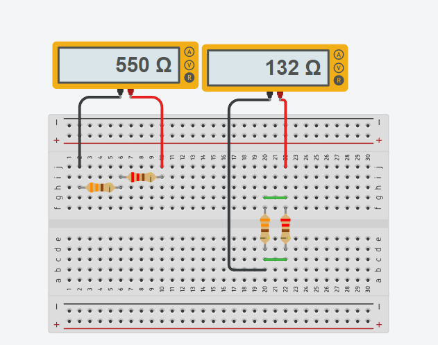

Associação de Restores
O que é a associação de resistores?
Associação de resistores é o circuito elétrico formado
por dois ou mais elementos de resistência elétrica ôhmica (constante),
ligados em série, paralelo ou ainda, em uma associação mista.

Fonte: o Autor
Fonte: o Autor